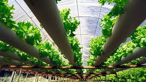
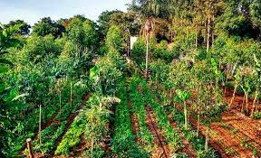

Modelos de Cultivo Eficientes
1. Agricultura de precisão: a agricultura de precisão envolve o uso de tecnologias como GPS, sensores e imagens de satélite para monitorar e otimizar o manejo das culturas. Isso permite a aplicação precisa de fertilizantes, água e pesticidas, reduzindo o desperdício e aumentando a eficiência do uso dos recursos.

2. Agricultura vertical: a agricultura vertical é um modelo de cultivo em que as plantas são cultivadas em camadas verticais em estruturas fechadas, como estufas ou prédios. Essa abordagem permite o uso eficiente do espaço, a produção em qualquer época do ano e o controle preciso das condições ambientais, resultando em maior produtividade por unidade de área.

3. Aquaponia: a aquaponia combina a criação de peixes em tanques com o cultivo de plantas em um sistema simbiótico. Os resíduos dos peixes fornecem nutrientes para as plantas, enquanto as plantas filtram a água para os peixes. Esse sistema fechado reduz o consumo de água em comparação com a agricultura tradicional e aumenta a produtividade tanto na produção de peixes quanto na de plantas.

4. Cultivo hidropônico: na hidroponia, as plantas são cultivadas sem solo, em vez disso, são suspensas em um meio nutritivo líquido ou em aeroponia, onde as raízes são expostas ao ar e nebulizadas com nutrientes. Esse método permite um controle preciso dos nutrientes fornecidos às plantas e o uso eficiente da água, resultando em maior produtividade e economia de recursos.
5. Agrofloresta: a agrofloresta é um sistema agrícola que integra árvores, culturas agrícolas e animais em um mesmo espaço. Essa abordagem promove a diversidade e a interação positiva entre as espécies, aumentando a resiliência do ecossistema e reduzindo a necessidade de insumos externos. Além disso, a agrofloresta pode ajudar na conservação do solo e no sequestro de carbono.
